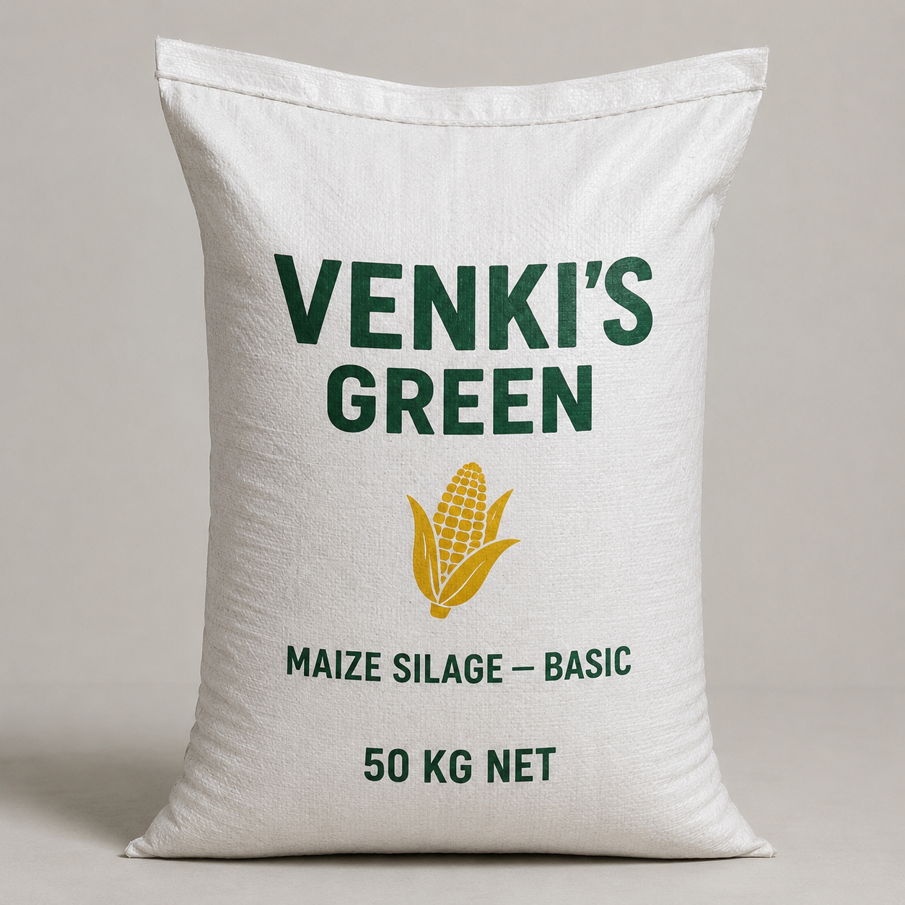
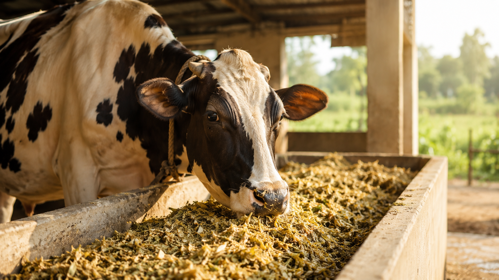
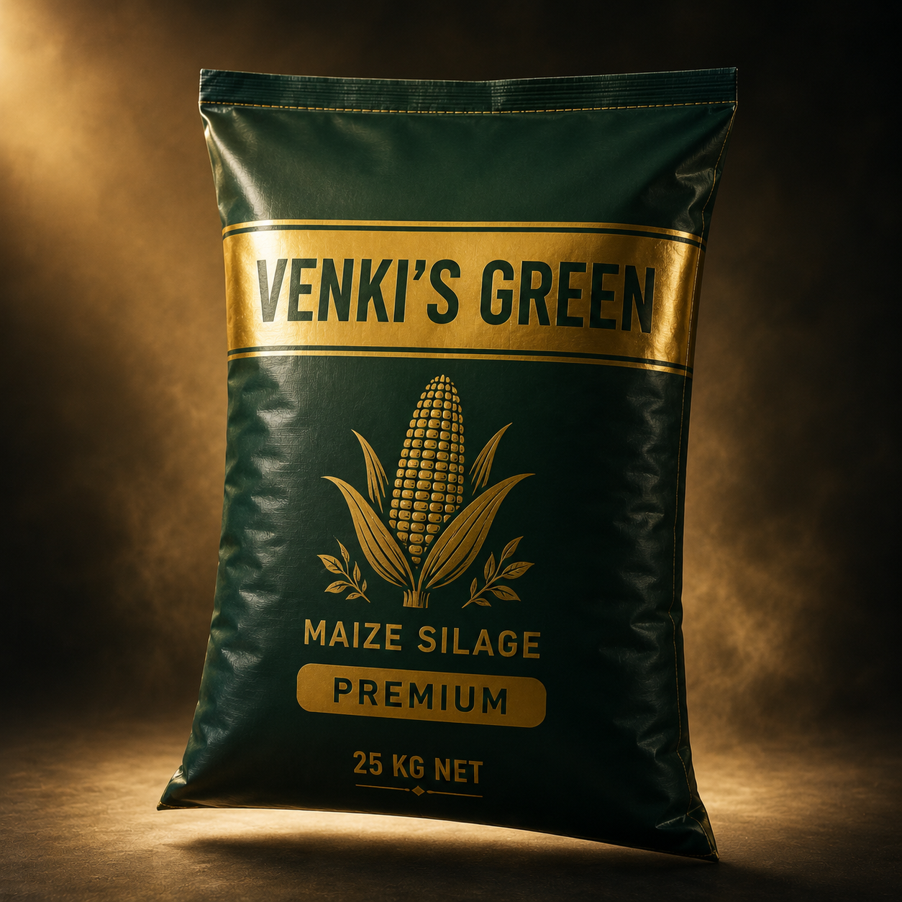
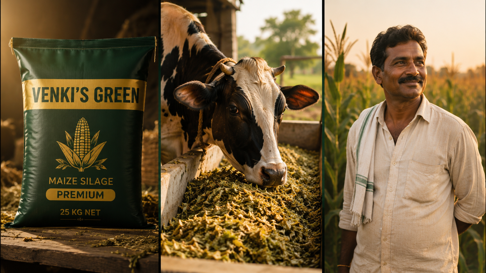
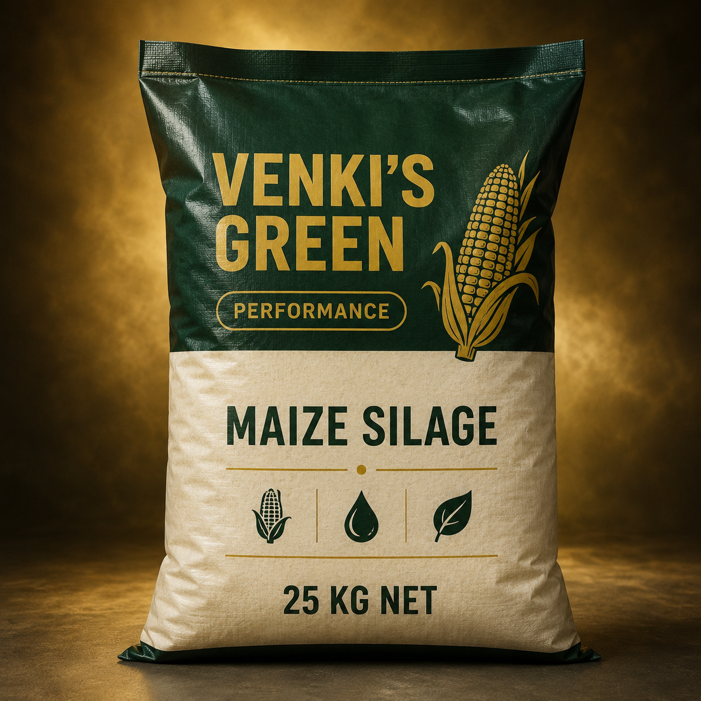
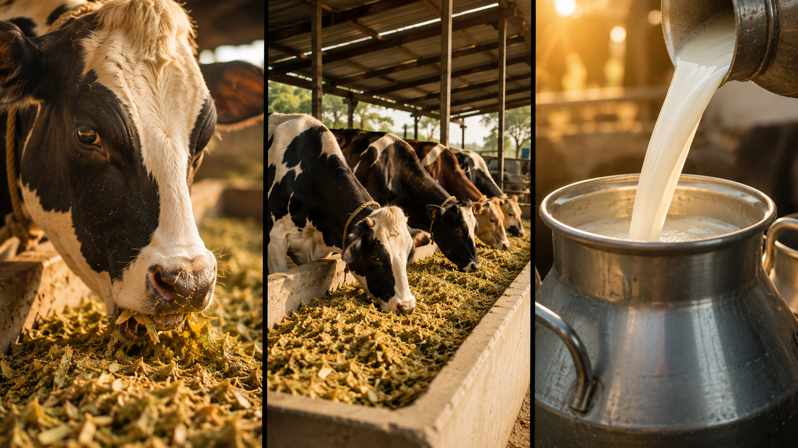
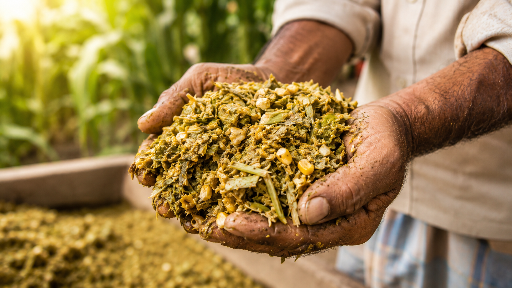

Tier 1
01 / 03

Basic
Daily affordable nutrition for local dairies
- Price
- Pack
- ₹4–5 / kg
- 50 kg
- Economical daily feed
- Controlled moisture
- Reliable digestibility
- Local dairy ready
Modern livestock nutrition solutions designed for better yield, healthier digestion, and sustainable dairy farming.



VENKI'S GREEN is a family-owned initiative rooted in Karnataka's farming heritage, building modern fodder preservation infrastructure for India's dairy economy.
We combine scientific fermentation, anaerobic packaging, and precision sourcing to solve the year-round green fodder shortage — so livestock get consistent, high-energy nutrition every single day.
Choose the formulation that matches your herd, your yield targets, and your operating economics.

Daily affordable nutrition for local dairies

Commercial dairy farms scaling output
High-yield, performance-focused operations
Multi-layer vacuum film. UV-stable print. Built to ride a truck across monsoon Karnataka and still seal airtight.
Every batch passes through the same controlled flow — no shortcuts, no guesswork.
Hybrid maize sown on contracted farmland, monitored for fibre and grain ratio.
Cut at 32–35% dry matter — the sweet spot for fermentation sugar and digestibility.
Precision-chopped to 15–20 mm for optimal compaction and rumen function.
Anaerobic lactic-acid fermentation, temperature and pH logged for 21+ days.
Air evacuated, multi-layer film sealed, weight verified — locked for 12-month shelf life.
Nutritional panel verified per lot, dispatched cold-chain ready across Karnataka.
Pre-fermented, energy-dense maize silage doesn't just fill your animals — it lifts every metric that matters to a working dairy.

Average milk yield lift when replacing dry fodder.
Higher energy density lifts fat and Solids-Not-Fat.
Pre-fermented fibre is gentler on the rumen.
Higher palatability drives voluntary dry-matter intake.
Better energy balance shortens calving interval.
Stronger calves when fed to dry and pregnant cows.
Typical ranges from peer dairy science literature (NDRI, ICAR-IGFRI, FAO). Actual lift depends on baseline diet and herd condition.

Consistent energy density drives measurable lift in daily milk per cow.
Pre-fermented fibre is gentler on the rumen, reducing acidosis risk.
Vacuum seal eliminates fungal spoilage common in open silage pits.
Stack it like cement bags — no pit, no tarp, no daily moisture watch.
Compressed density means more feed per truck and lower freight cost.
Decouple feeding from the monsoon calendar — same nutrition every month.
Every bag tested against the same nutrition panel before dispatch.
12-month sealed shelf life under normal Indian shed conditions.
Modern silage isn't just better feed — it's a quieter climate intervention. Less wasted fodder, fewer enteric emissions per litre of milk, more resilient dairy economies.
Three generations of Karnataka farming, one shared belief: India's dairy farmers deserve nutrition infrastructure that matches global standards.
Silage is step one. We're building the rails for India's next-generation livestock nutrition system.
Bag-level QR traceability and feed-ration recommendations per herd.
Regional fermentation hubs serving every dairy district in South India.
Closing the loop with milk-yield analytics tied back to feed lots.
Contract farming that pays farmers above MSP for quality maize.
Whether you run 12 cows or 1,200 — we'll match you to the right grade and pack size.